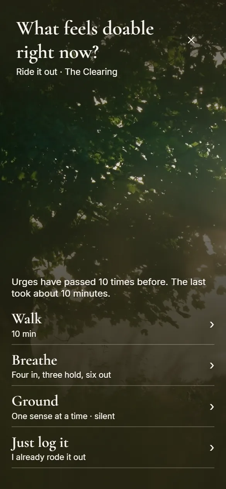

01The Sheltered Coast · daylightevening
Urges pass,like waves.
Urge Walk is a small island for the next few minutes. When an urge hits, take a walk, breathe for a minute, or come back to your senses, and let it pass.
Coming to iPhone.
Need a minute now
02The Clearing · daylightevening
What feels doable right now?
One button, Ride it out, on Home and at the top of every place. One question, four answers. Hold it, and a walk begins.
- Walkat your own pace
- Breatheone slow minute
- Groundone sense at a time
- Just log ityou already rode it out
03The Path Ahead · daylightevening
Your usual length, a custom one up to two hours, or no timer at all. The time stays right if your screen locks, and finishing early is fine. Coming back is the point, not the distance.
Walk it out.
Take a walk now04The Tide Pool · daylightevening
Breathe for a minute.
In for four, hold for three, out for six. Try it here.
Ready when you are
05The Shore · daylightevening
Come back to right here: five, four, three, two, one.
Come back to right here, one sense at a time, as slowly as you like.
Ground yourself now06The Cove · daylightevening
You can just be here.
Nothing to finish, nothing to keep up with. Stay a while with the sound of the tide.
07The Shelter · daylightevening
Somewhere for your words.
A private journal on your phone. After a walk, a line, a word, or nothing at all. Whole pages when you want them.

08The Outlook · daylightevening
Where you have been.
After each urge, one question: what did it do? Nothing is graded, there are no streaks to break, and a hard moment never resets your clean days.
09The Cottage · daylightevening
Yours, and only yours.
Urge Walk is not a crisis service and isn’t a substitute for professional care. In the US, call or text 988 (Suicide & Crisis Lifeline, 24/7). Outside the US, find a helpline.
10Night
Coming to iPhone.
Urge Walk is being finished for the App Store. Until then, the one-minute breathe and five-sense grounding here are free to use, any time.
Keep it on your phone
Walk, Breathe and Ground, even offline.
Add Urge Walk to your home screen. The three tools open like an app and keep working with no signal, so they are there when you need them.
On iPhone, in Safari: tap Share, then Add to Home Screen.
In your browser’s menu, choose Install or Add to Home Screen.
It is on your home screen. The tools work offline.
Why I made this
I know what it feels like when your own head gets too loud and sitting still only makes it heavier. Through months of my own toughest stretches, I learned that you cannot always think your way out of an urge or an anxious loop. Sometimes, the only thing that actually helps is putting your shoes on, heading out to the park, and letting physical movement quiet things down.
I built Urge Walk because I needed a straightforward tool that didn’t overcomplicate that process. Designed for adults as a practical support tool, and not a replacement for professional care, the app keeps the focus on simple forward motion. You don’t have to figure everything out today. This app is just for getting through the next few minutes, one walk at a time.
Darius Tatum